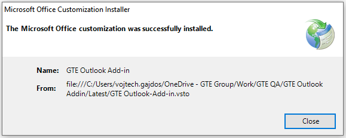
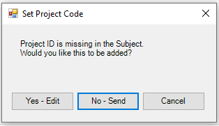
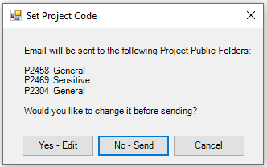
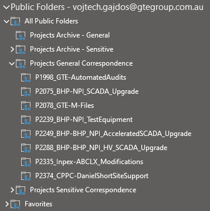
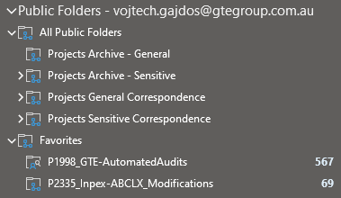
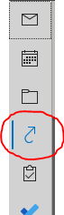

GTE Outlook Add-in#
Summary
The GTE Outlook Add-in helps with storing project related email correspondence into a MS Exchange Project Public Folder (PPF) created for each active project. This allows tracking and archiving of project related correspondence.
Add-in Installation#
The installation program is located here and consists of the following set of folders/files (when downloading the installation files, make sure all from below have been downloaded, including the 'Application Files' folder):

Note
Before start of installation, first check if Public Folders are appearing in your Outlook (see below section 'Recommneded Outlook Configuration'). If you do not see the Public Folders in the Folders pane, follow instructions in the 'Known Issues' section, item 1.
To begin the installation of the add-in, follow the steps below:
- Exit Outlook
- Run
setup.exe - When the dialog box below appears, click
Install:
- The installation program will run and execute all necessary steps to install the add-in. Successful installation is confirmed by the following message: 
- Click
Close, the installation is now complete. To confirm that the Add-in was successfully installed and is now active, run Outlook and selectFile > Options > Add-ins. You should see the 'GTE Outlook Add-in' on the top of the 'Add-ins' list:
Add-in Operation#
GTE has adopted a set of rules around storing and handling project-related email correspondence, which form the basis for successful operation of the GTE Outlook Add-in. The rules are as follows:
Important
- There is an MS Exchange public folder (Project Public Folder – PPF) configured for each project
- PPF’s are located in the main “All Public Folders” folder and based on the project status, distributed into one of the following groups:
- Potential Projects
- Active Projects
- Non-executed Projects
- Completed Projects
- Each PPF has a configured email address obeying the following format:
PxxxxF@gtegroup.com.au - ALL project related emails (internal/external, in/outgoing) will be stored in its respective PPF. This is achieved by Cc-ing all emails to the PPF email address. By doing so, all replies (internal/external) will be automatically delivered to and stored in the PPF.
- ALL project-related emails (internal/external, out/ingoing) will contain the project code in the 'Pxxxx:' format in their
Subjectfield, for example: - Any email received from an external sender, which has not been Cc'd to PPF (typically communication thread initiated by the customer) must be manually moved/copied to the PPF by email's principal recipient
The main purpose of the GTE Outlook add-in is to make sure that all the outgoing project-related emails will contain the project code in their subject as well as the PPF email address in their Cc.
The GTE Outlook Add-in is loaded automatically upon Outlook start-up. Its function is to check each email before sending and making sure the Cc and Subject fields are properly set up.
After clicking the Send button when sending an email (new/reply/forward), the add-in searches the email Subject field for the project code in the 'Pxxxx:' or 'pxxxx:' format. If the code is not found, it displays the following pop-up message:

Select one of the following options:
Cancel: email sending action is cancelled
No: email is sent without any change to Subject/Cc
Yes: the following window is displayed:

Enter the project code (4 digits) in the Project ID: field (the only editable field), and the Cc and Subject fields will update automatically:
After entering the correct project ID, click one of the following buttons:
OK & Send: send the email out with the Subject and Cc fields being modified accordingly
OK & Edit: go back to the email editing window with the Subject and Cc fields modified accordingly
Cancel: go back to the email editing window without any changes made to the Subject or Cc fields
In case the email being sent contains a project ID in the Subject field in the correct format, and the Cc field does not contain the corresponding PPF email address, the following message will be displayed:

You have the following options to choose from:
Yes: add project folder email address to the Cc field and send the email
No: don't change the Cc field and send the email
Cancel: go back to the email editing window without affecting the Cc field
Note
If project ID in the email Subject contains lower letter 'p', addin automatically changes it to the upper case letter 'P'
Recommended Outlook Configuration#
To quickly access the PPF, the following steps are recommended to be configured in MS Outlook:
-
Since public folders are accessible via the 'Folders' navigation icon, this icon should be made visible in Outlook bottom-left navigation pane:
- Click the three-dots icon: and select 'Navigation Options'.
- Move 'Folders' higher in the hierarchy. At the same time, move 'Shortcuts' higher as well (this item is also used for quickly accessing PPF):
- The navigation pane changes to the following:
 . By clicking the 'Folders' icon, the PPF can be found in the respective subfolder of the
. By clicking the 'Folders' icon, the PPF can be found in the respective subfolder of the Public Folders > All Public Folders:

2. Alternatively, configure the PPF to be accessible offline:- Select your account in the
File > Account Settings:

- Click
Change…. - Click
More Settings. - Go to the 'Advanced' tab.
- Tick the
Download Public Folder Favoritescheckbox:

- Click
OK. Outlook will need to be re-started afterwards.
By doing this, any PPF that is added to the 'Favourites' public folder will be available offline. To add a PPF to Favorites follow the steps below:
- Right-click on the PPF.
- From the pop-up menu, select 'Add to Favorites…'.
-
Click
Addbutton:
The PPF then appears under the 'Favorites' folder:

3. Using 'Shortcuts' for quick access:
-
Click on
Shortcutsin the bottom-left navigation pane: , the Folder Pane shows the default Shortcut structure:
-
The default shortcuts are normally not required, they can be removed by right-clicking and selecting 'Delete Shortcut'
- Right-click the
Shortcutsitem and select 'New Shortcut' -
In the displayed folder hierarchy, select the corresponding PPF (it is recommended that the version from “Favorites” is selected so that shortcuts refer to the offline version if needed):

-
Click
OK. The shortcut to the PPF is added to the Folder Pane:
By clicking on the shortcut, the whole contents of the PPF is displayed in the main pane.
Known Issues#
-
Occasionally the Public Folders disappear completely from the Folders Pane a couple of seconds after the Outlook restart. This is a known Microsoft problem, to fix it the following needs to be done:
- Close Outlook
- Open the Registry Editor (regedit)
- Navigate to the Current User/Software/Microsoft/Office
- Delete the “Outlook” key
- Delete the “16.0/Outlook” key
- Restart Outlook
This will restore the Outlook profile and will solve the Public Folders disappearing problem.
-
While installing the add-in, in certain cases the digital certificate is not recognized as trusted and therefore the installation is aborted. I this happens, please follow the instructions contained in this video.